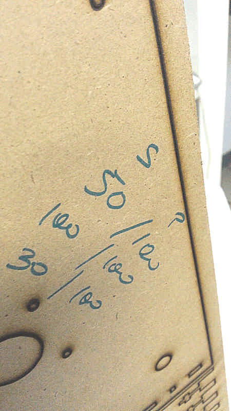
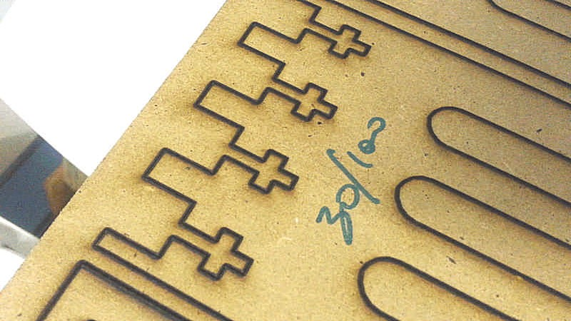
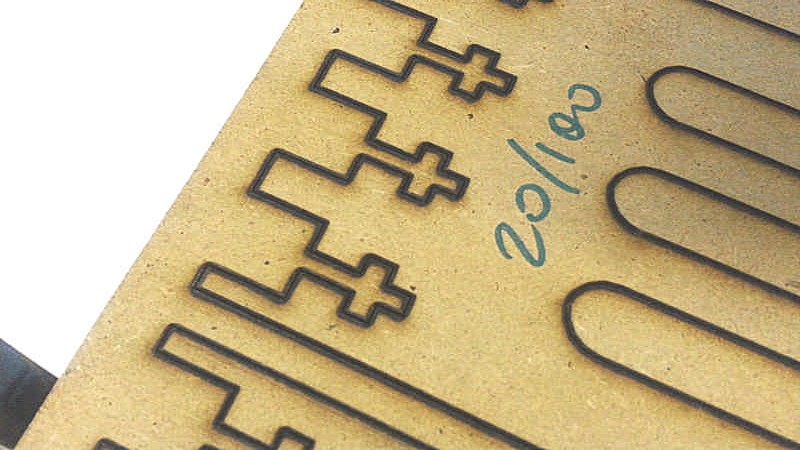
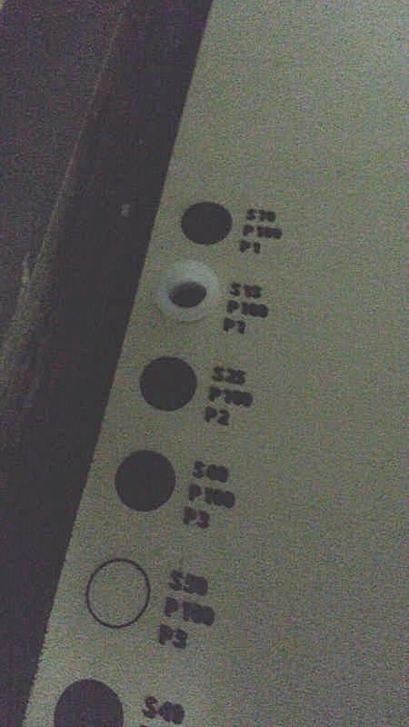
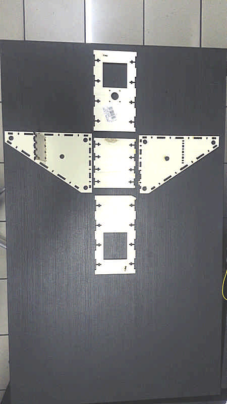
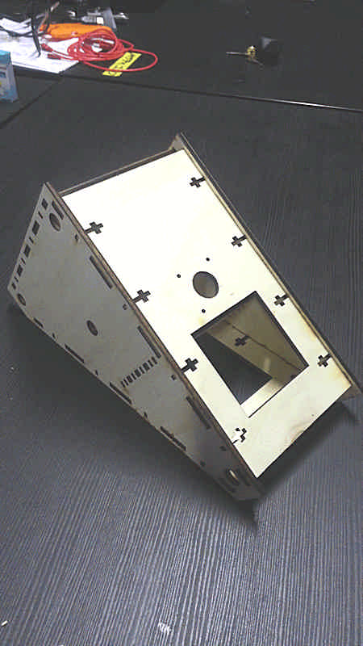

David Montenegro
FAB ACADEMY 2015
Final Project | Assignments | Download | About | Contact
Machine Design
On wednesday 05.20.2015 we’ve got the sexteenth online lesson with Neil Gershenfeld.
The next lessons can be found on the Fab Academy account on Vimeo.
For this week the assignment was
** make a machine, including the end effector build the passive parts and operate it manually document the group project and your individual contribution**
What are we making?
We’ve built a machine to machining rings out of modelling wax. It has 4 axes to work all around the surface of the ring.
A ring is a small object and so the machine doesn’t need great spans for the movements; probably it need a very sturdi chassis to guarantee stiffness and precision in very fine jobs.
Moreover it needs to operate over a curve surface, so it needs a 4th axe to change dynamically the angle of the milling.
To work all around the ring it will be mounted on a chuck that respond at the axe Y, not linear but polar and periodical.
You can find more info about the management of the movements of the axes at the firmware page.
X axe
movement: linear
transmission: belt
reduction ratio: 1:1 on GT2 Pulley 20 Teeth 8mm Bore (www.robotdigg.com/product/23/GT2-Pulley-20-Teeth-8mm-Bore)
delta X: 60mm
Y axe
movement: polar
transmission: rod
reduction ratio: 1:1 on Threaded Rod NEMA17, 280mm Tr8*8mm Acme Leadscrew
delta Y: 360°
Z axe
movement: linear
transmission: rod
reduction ratio: 1:1 on Threaded Rod NEMA17, 280mm Tr8*8mm Acme Leadscrew
delta Z: 60mm
A axe
movement: polar
transmission: belt
reduction ratio: 1:1 on GT2 Pulley 20 Teeth 8mm Bore (www.robotdigg.com/product/23/GT2-Pulley-20-Teeth-8mm-Bore)
delta A: 60°
My tasks
I’ve managed the operations related with the production: nesting the file for lasercutting, set the cutting parameters,assemble the machine, make considerations about how this model can be improved.
Materials extra
We’ve added some materials to the machine kit provided by the organization.
- 10 MDF sheets 500x700x5
- M3 bolt and nuts
- 1 Dremel 300
- 1 Dremel remote pen
MDF should not be the first choice to if you’re going to lasercut it, but it’s 40% cheaper than plywood.
Nesting
To optimize the operations and waste the minimum amount of material I’ve placed all the pieces on 500x700 layout.

The machine is actually undder development so on the nesting you can see just the structure; moving parts will came soon.
Structure cutting
We’ve used a Fullspectrum 90W with about 500hr cutting on a 5mm MDF.
At the beginning I started cutting a two single pieces to test if the fit works.
The parameters at the first attempt were:
Speed: 50%
Power: 100%
Current: 100%
Passes: 1
The cut wasn’t visible on the other side, so I cut on the same path twice with just to pass through:
Speed: 100%
Power: 100%
Current: 100%
Passes: 1
But it doesn’t work neither.
For the last attempt I tried
Speed: 30%
Power: 100%
Current: 100%
Passes: 1
but probably the material was carbonized and so the laser simply can’t burn it more.

So I’ve cut other two pieces with the following settings
Speed: 30%
Power: 100%
Current: 100%
Passes: 1


…and it doesn’t works! As you can see in picture the cutting line is not clear and it seams that the beam is wider than usually is. So now the hypothesis is that the system of mirrors are a little uncentered, so a lot of energy dissipates somewhere.
Trying to cut at
Speed: 30%
Power: 100%
Current: 100%
Passes: 3
It works fine.
Y carriage cutting
Because the MDF is a terrible material to be lasercutted we decided to use a lot of 5mm plywood scraps to make the next part. First of all I made several cutting test to find the correct setting for the laser.

I used the file cutting_test to cut the hole where the bush has to go in (the third parameter you find on the file is the number of passes, and, despite what you can read, I passed just once per cut).
All the scraps are bent along their longest dimension, so any fine tuning of the focus has revealed pointless.
I found a good setting with these parameters:
speed 15%
power 100%
current 100%
passes 1

and so I’m going to use them to cut all the pieces.


After some considerations about tilt movement, acording with Fiore and Giacomo, we widen the Y carriage tuning some kerf for a tighter fit.
The Z axe has been produced by Giacomo while I supported the production of the electronics: 1 Fabduino that drives 4 independent boards to drive the axes.